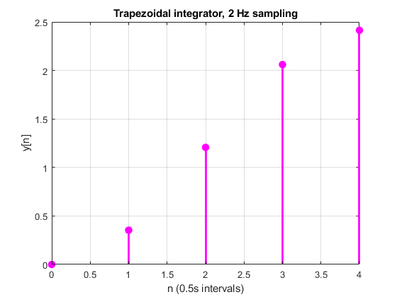

clear all
close all
clc
D = diag(0.5 * ones(1,5));
lt = tril(ones(5,5));
ltt = lt - diag(diag(lt));
H_check = D + ltt;
matint = zeros(5,5);
mat = [1 1 1 1 1/2];
shifted_mat = circshift(mat, -1, 2);
H = matint;
ii = 1;
for i = 1:size(matint)
matint(i,:) = matint (i,:) + mat;
for j = 1:size(matint)
H(j,:) = circshift(matint(j,:), ii, 2);
ii = ii + 1;
end
end
for jj = 1:size(matint)-1
H(jj,jj+1:size(matint)) = 0;
end
t = 0:0.5:2;
x = sin((pi/2).*t);
n = 0:4;
y = H*x';
f0 = figure('Name','Stem Plot of Trapezoidal Integrator, 2 Hz Sampling');
stem(n,y, 'filled', 'Linewidth', 2, 'color', 'magenta');
xlabel('n (0.5s intervals)')
ylabel('y[n]')
title('Trapezoidal integrator, 2 Hz sampling')
grid on
diary vj_problem3.txt
echo
x
H
y
echo off
diary off
x
x =
0 0.7071 1.0000 0.7071 0.0000
H
H =
0.5000 0 0 0 0
1.0000 0.5000 0 0 0
1.0000 1.0000 0.5000 0 0
1.0000 1.0000 1.0000 0.5000 0
1.0000 1.0000 1.0000 1.0000 0.5000
y
y =
0
0.3536
1.2071
2.0607
2.4142
echo off
